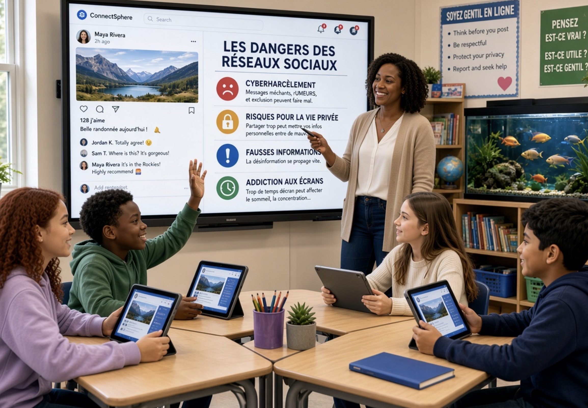

Éducation, intelligence artificielle et nouvelles technologies : sortir du réflexe d’interdiction
On ne peut plus faire comme si les réseaux sociaux, l’intelligence artificielle et les nouvelles technologies n’avaient aucun impact sur l’éducation. Elles ont déjà profondément transformé l’environnement dans lequel évoluent les élèves, les étudiants, les enseignants, les chercheurs et, plus largement, l’ensemble de la société.
Les jeunes les utilisent. Les adultes les utilisent. Les enseignants les utilisent. Les professionnels les utilisent. Et même ceux qui affirment ne pas utiliser les réseaux sociaux ou l’intelligence artificielle sont souvent confrontés à leurs effets, parfois malgré eux.
Cette réalité impose une question simple : l’école doit-elle subir cette transformation ou doit-elle apprendre à l’accompagner ?
Former plutôt qu’interdire
L’intelligence artificielle peut permettre de personnaliser davantage l’apprentissage, d’adapter certains exercices au niveau de l’élève, de proposer des explications différentes lorsqu’une notion n’est pas comprise ou encore d’accompagner l’enseignant dans certaines tâches.
Il ne faut donc pas regarder uniquement la partie vide du verre. Il faut aussi regarder la partie pleine.
Mais cette évolution comporte évidemment des risques. La tentation existe de déléguer à l’IA des tâches que nous n’avons pas envie de réaliser. Or certaines de ces tâches sont précisément celles qui permettent de développer des compétences fondamentales : mémorisation, raisonnement, rédaction, analyse, résolution de problèmes, esprit critique ou capacité à transférer ses connaissances.
Une utilisation excessive peut alors conduire à un phénomène de désapprentissage ou de perte progressive de compétences — ce que l’on peut rapprocher des notions de deskilling et de skill decay.
À cela peut s’ajouter une forme de dépendance : l’élève peut progressivement avoir le sentiment qu’il ne sait plus travailler sans l’intelligence artificielle.
Les enseignants sont eux aussi concernés
Il serait également illusoire de considérer que seuls les élèves utilisent l’intelligence artificielle. Les enseignants l’utilisent pour préparer des cours, générer des supports pédagogiques, construire des plans de cours, produire des exercices ou encore assister certaines corrections.
Cela pose évidemment des questions éthiques, pédagogiques et professionnelles. Mais cela révèle surtout une réalité : l’école tout entière est concernée par cette transformation.
L’interdiction doit rester le dernier recours
À mon sens, l’interdiction devrait toujours constituer une dernière ligne de défense. Interdire peut parfois être nécessaire pour protéger, mais l’interdiction ne peut pas constituer à elle seule une politique éducative.
Lorsqu’une technologie existe dans la société, que les élèves y sont exposés quotidiennement et qu’elle transforme progressivement les pratiques professionnelles, ne pas l’enseigner revient à laisser les jeunes apprendre seuls, souvent sans cadre, sans méthode et sans compréhension des risques.
Le rôle de l’école devrait précisément être de donner les connaissances et les outils nécessaires pour comprendre, utiliser, questionner et maîtriser ces technologies.
Former dès le plus jeune âge
Les élèves doivent apprendre progressivement ce qu’est une intelligence artificielle, ce qu’elle sait faire, ce qu’elle ne sait pas faire, comment elle peut se tromper, comment elle peut influencer leurs décisions et comment protéger leurs données.
Il faut également apprendre à utiliser les réseaux sociaux de manière raisonnée : comprendre les mécanismes de recommandation, la collecte des données, les phénomènes d’addiction, la manipulation de l’information, le cyberharcèlement, les risques liés aux interactions avec des inconnus et les techniques utilisées par certains prédateurs.
Former avant d’exposer me paraît donc beaucoup plus pertinent que simplement interdire puis autoriser.

Repenser l’école
Les réseaux sociaux, l’intelligence artificielle et les technologies numériques ont changé l’environnement dans lequel élèves et enseignants interagissent. Nous ne savons pas précisément à quoi ressemblera l’école dans dix, vingt ou trente ans. Mais nous pouvons être certains d’une chose : son environnement technologique continuera d’évoluer.
Il faut donc repenser l’apprentissage. L’intelligence artificielle pourrait notamment permettre de développer davantage un accompagnement individualisé, en proposant à chaque élève des explications, des exercices et des parcours adaptés à ses besoins.
Mais cette personnalisation ne doit pas devenir une privatisation de l’éducation : elle doit rester accessible à tous.
Alléger pour mieux apprendre
Dans certaines disciplines, les programmes sont extrêmement chargés. On accumule les notions, parfois au détriment de leur compréhension réelle. Résultat : certaines compétences fondamentales peuvent être abordées trop rapidement.
Je pense notamment à la compréhension des textes, à la méthodologie, au raisonnement, au transfert des connaissances, à la réflexion, à l’argumentation, à l’esprit critique et à la capacité à faire des choix responsables.
L’enjeu n’est donc pas nécessairement d’apprendre davantage de choses, mais parfois d’apprendre moins de choses, et de les apprendre beaucoup mieux.
Le papier et le numérique sont complémentaires
Intégrer les nouvelles technologies à l’école ne signifie évidemment pas supprimer le papier et le crayon. Bien au contraire. L’écriture manuscrite, la lecture sur papier, la prise de notes et certaines formes d’apprentissage sans écran conservent toute leur importance.
Le débat ne devrait donc pas opposer artificiellement papier et technologie. La main, le papier, le livre, l’enseignant, le numérique et l’intelligence artificielle peuvent être complémentaires.
Regarder la recherche avec esprit critique
Il faut également aborder avec prudence les recherches qui mettent en évidence les dangers des nouvelles technologies, des réseaux sociaux ou de l’intelligence artificielle. Cela ne signifie pas nier les risques documentés. Cela signifie examiner les méthodologies, les populations étudiées, les indicateurs retenus, les limites des études et la manière dont leurs résultats sont interprétés.
En recherche, la question posée influence nécessairement ce que l’on cherche à mesurer. Si l’on cherche uniquement les effets négatifs d’une technologie, on risque de produire une analyse incomplète. À l’inverse, rechercher uniquement ses bénéfices conduirait au même problème.
La bonne approche consiste donc à examiner les bénéfices, les risques, les conditions d’utilisation et les limites, sans partir d’une conclusion préétablie.
Reconnaître que nous sommes tous en train d’apprendre
Il faut enfin accepter une réalité parfois inconfortable : nous sommes tous en train d’apprendre. Les élèves apprennent. Les enseignants apprennent. Les institutions apprennent. Les chercheurs eux-mêmes doivent continuellement actualiser leurs connaissances.
Personne ne maîtrise encore complètement les conséquences à long terme de ces technologies. Reconnaître cette situation n’est pas un aveu de faiblesse. C’est au contraire le point de départ d’une démarche sérieuse.
Nous devons arrêter de nous enfermer dans le débat « pour ou contre l’intelligence artificielle ». Nous devons nous mettre au travail.
Former les élèves. Former les enseignants. Former les parents. Adapter les méthodes d’évaluation. Repenser les programmes. Développer l’esprit critique. Enseigner les risques. Apprendre à utiliser les outils. Apprendre également à ne pas les utiliser lorsque cela est nécessaire.
L’intelligence artificielle ne doit ni devenir notre béquille, ni devenir notre ennemie. Elle doit devenir un objet d’apprentissage, un outil que nous comprenons, que nous questionnons et que nous savons maîtriser.
Parce que le véritable enjeu n’est finalement pas de savoir si l’école doit entrer dans l’ère de l’intelligence artificielle. Elle y est déjà.
La véritable question est de savoir si nous allons accompagner cette transformation intelligemment, ou laisser les technologies transformer l’école sans elle.
TWAGIRUMUKIZA
Cybersecurity & Risk Management Consultant · Cybersécurité · Risques · Conformité
Commentaires
L’espace de discussion ci-dessous nécessite un compte GitHub (gratuit) pour s’identifier et publier un commentaire. Les échanges sont hébergés et modérés via GitHub Discussions.
Règles de la discussion
- Restez respectueux, même en désaccord : on critique les idées, pas les personnes.
- Pas d’insultes, de propos haineux, discriminatoires ou de harcèlement.
- Pas de spam, de publicité, ni de liens sans rapport avec le sujet.
- Ne partagez pas de données personnelles, les vôtres ou celles d’autrui.
- Restez autant que possible dans le sujet de la tribune.
- Tout commentaire contraire à ces règles pourra être modéré ou supprimé, à la discrétion de l’auteur.